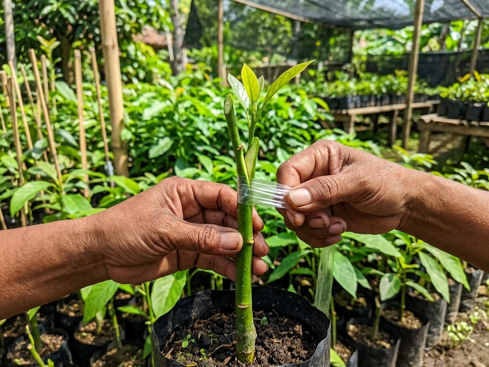

Cara Memilih Bibit Alpukat Sambung Pucuk yang Sehat dan Cepat Berbuah

Memilih bibit alpukat yang berkualitas merupakan langkah awal paling fundamental sebelum Anda menginvestasikan modal lahan, pupuk, dan waktu perawatan bertahun-tahun. Salah satu metode perbanyakan yang paling direkomendasikan dalam budidaya alpukat modern adalah sambung pucuk (*grafting*), yaitu teknik memadukan bagian pucuk (entres) tanaman induk unggul dengan batang bawah yang berakar kokoh.
Dibandingkan menanam alpukat dari biji murni (yang baru berbuah setelah 7–10 tahun dan rentan mengalami kemunduran sifat buah), bibit hasil sambung pucuk dari pohon induk yang jelas membantu mempertahankan karakter varietas 100% konsisten. Tanaman juga berpotensi memasuki fase berbuah jauh lebih awal, umumnya pada usia 2,5 hingga 3,5 tahun setelah tanam.
Namun, perlu dipahami bahwa bibit sambung pucuk tidak serta-merta otomatis berbuah tanpa perawatan yang benar. Kualitas kalus sambungan, kesehatan perakaran, kesesuaian iklim mdpl, dan ketelatenan pemupukan memegang peranan besar. Simak 10 panduan teknis berikut agar Anda tidak salah memilih bibit.
Daftar Isi Panduan
- 1. Mengenal Bibit Alpukat Sambung Pucuk & Keunggulannya
- 2. Periksa Kesehatan Fisik Daun dan Batang
- 3. Pastikan Titik Sambungan Menyatu dengan Baik (Kalus)
- 4. Pilih Batang Bawah dan Sistem Akar yang Sehat
- 5. Pastikan Kejelasan Varietas dan Pohon Induk Entres
- 6. Faktor yang Menentukan Kecepatan Berbuah
- 7. Sesuaikan Ukuran Bibit dengan Kebutuhan Lahan
- 8. Perhatikan Komposisi Media Tanam dan Drainase
- 9. SOP Penanganan Bibit Setelah Dibeli / Baru Tiba
- 10. Kesalahan Fatal yang Wajib Dihindari Pembeli
- 11. FAQ Seputar Bibit Alpukat Sambung Pucuk
1. Mengenal Bibit Alpukat Sambung Pucuk
Sambung pucuk (*top grafting*) adalah seni menggabungkan dua bagian tanaman yang berbeda: batang bawah (*rootstock*) yang bertugas menyerap air dan hara dari dalam tanah, serta entres pucuk yang membawa sifat genetika buah unggul dari pohon induk dewasa. Jika jaringan kambium kedua belah pihak berhasil bertaut, tanaman akan tumbuh sebagai satu kesatuan yang kuat.

Penyatuan kambium entres dan batang bawah.4 Keunggulan Utama Sambung Pucuk:
- Karakter Buah 100% Identik: Buah yang dihasilkan dijamin memiliki cita rasa, ketebalan daging, dan ukuran yang sama persis dengan pohon induknya.
- Masa Berbuah Jauh Lebih Singkat: Mulai berbuah pada usia 2,5–3,5 tahun, berbeda dengan semaian biji yang butuh 7–10 tahun.
- Pilihan Varietas Unggulan: Bebas memilih varietas juara seperti Miki, Aligator, Hass, Kendil, Cuba, atau Pluwang.
- Keseragaman Kebun: Pola pertumbuhan dan tajuk tanaman lebih seragam sehingga mempermudah pemeliharaan skala komersial.
2. Periksa Kesehatan Daun dan Batang
Kondisi fisik daun dan batang adalah cerminan langsung dari metabolisme tanaman. Bibit yang bervigor tinggi memiliki kemampuan adaptasi yang jauh lebih prima setelah ditanam di lahan terbuka.
Indikator Fisik Bibit yang Sehat:
- Warna Daun Normal: Daun tua berwarna hijau pekat mengkilap, dan daun muda (trubus) berwarna hijau pupus kemerahan segar.
- Tidak Ada Gejala Penyakit Daun: Bebas dari bercak cokelat antraknosa, daun keriting abnormal, atau bercak kuning tanda defisiensi hara parah.
- Batang Silindris Kokoh: Batang utama berdiri tegak lurus, tidak kurus kerempeng (*etiolasi*), dan kulit batang mulus tidak berkerut.
- Bebas Dari Hama Penggerek: Tidak ada lubang gerek batang yang mengeluarkan getah atau serbuk gergaji halus.
3. Pastikan Sambungan Menyatu dengan Baik
Titik sambungan (*grafting union*) adalah organ paling krusial pada bibit hasil perbanyakan vegetatif. Jika ikatan sambungan rapuh atau tidak tertutup kalus sempurna, tanaman rentan patah saat tertiup angin kencang atau mati meranggas karena saluran nutrisi tersumbat.
Ciri-ciri Sambungan yang Berkualitas Prima:
- Kalus Tertutup Rapat: Sambungan berbentuk 'V' atau celah miring telah terisi jaringan kalus kambium secara rata tanpa rongga terbuka.
- Tidak Ada Pembusukan: Area sambungan tidak menghitam basah, tidak berbau busuk, dan bebas dari miselium jamur putih.
- Pucuk Aktif Bertumbuh: Bagian entres di atas sambungan tampak segar, berkayu sehat, dan telah memunculkan cabang atau tunas daun baru.
⚠️ Peringatan: Jangan pernah menggoyang atau menarik paksa sambungan bibit saat memeriksa di tempat pembibitan, karena tarikan keras dapat merusak jaringan kambium muda yang sedang menyatu.
4. Pilih Batang Bawah dan Akar yang Berkualitas
Banyak pembeli hanya terpukau oleh tajuk daun yang rimbun, namun melupakan bagian di bawah permukaan tanah. Perakaran adalah mesin penopang hidup tanaman alpukat. Tanaman alpukat membutuhkan banyak oksigen di daerah perakaran dan sangat anti terhadap genangan air.
Kondisi Batang Bawah yang Baik
Berasal dari biji pohon alpukat lokal yang tua dan sehat dengan daya adaptasi tinggi terhadap kondisi tanah tropis Indonesia. Pangkal batang bersih tanpa luka busuk leher batang (*collar rot*).
Kondisi Perakaran Aktif
Rambut akar berwarna putih kekuningan segar yang aktif menembus media. Hindari bibit dengan akar yang menghitam lembek berbau busuk atau bibit yang akarnya telah melingkar padat keras di dasar wadah (*root-bound*).
5. Pastikan Keaslian Varietas dan Asal Entres Jelas
Label nama bibit di polybag sangat mudah dibuat oleh siapa saja. Namun, yang paling berharga adalah keaslian pohon indukan tempat entres diambil. Pastikan Anda membeli bibit dari penangkar yang memiliki kebun indukan sendiri dan dapat menunjukkan bukti fisik buahnya.
5 Pertanyaan Kritis yang Wajib Diajukan ke Penjual:
6. Faktor Nyata yang Menentukan Kecepatan Berbuah
Jangan mudah tergiur oleh klaim berlebihan bahwa bibit pasti berbuah dalam 1 tahun. Dalam kaidah agribisnis buah, kecepatan berbuah ditentukan oleh kombinasi faktor biologis dan manajemen kebun:
Maturitas Entres (Kematangan Bahan Sambung)
Entres yang diambil dari cabang terminal pohon dewasa yang sedang dalam fase produktif membawa memori fisiologis untuk cepat membentuk kuncup bunga.
Kecukupan Paparan Sinar Matahari
Tanaman alpukat membutuhkan sinar matahari langsung minimal 6–8 jam setiap hari untuk melangsungkan proses fotosintesis pembentukan karbohidrat dan inisiasi bunga.
Pemupukan Fase Vegetatif vs Generatif
Gunakan pupuk N-tinggi saat fase awal pertumbuhan vegetatif (tahun 1–2), dan beralih ke pupuk tinggi Fosfat & Kalium (seperti MKP & KNO3) saat tanaman siap memasuki fase berbunga.
Teknik Pemangkasan Tajuk (*Pruning*)
Lakukan pemangkasan pucuk secara teratur agar tanaman bercabang banyak (tajuk mendatar), merangsang pembentukan tunas produktif, dan mempermudah panen.
7. Sesuaikan Ukuran Bibit dengan Kebutuhan Penanaman
Ukuran bibit yang lebih tinggi tidak selalu lebih unggul. Bibit yang terlalu tinggi namun batangnya kurus justru sangat rentan patah dan mengalami masa stres yang lebih panjang saat dipindahkan.
Untuk Pekarangan & Tabulampot
Pilih bibit dengan ketinggian 60–80 cm yang bertajuk simetris rimbun. Ukuran ini paling praktis ditanam di pot drum 100 liter atau halaman rumah sempit.
Rekomendasi: Alpukat MikiUntuk Kebun Komersial Luas
Pilih bibit berukuran seragam 70–90 cm dengan diameter batang minimal seukuran jari telunjuk. Pastikan pasokan bibit berasal dari batch okulasi yang sama untuk memudahkan rotasi panen.
Rekomendasi: Aligator / Hass / Pluwang8. Perhatikan Komposisi Media Tanam dan Drainase
Media tanam di dalam polybag harus memiliki porositas yang prima. Alpukat adalah tanaman yang paling tidak toleran terhadap kondisi perakaran yang tergenang air becek (*waterlogged*).
- Ciri Media yang Buruk: Tanah liat murni yang memadat keras saat kemarau dan becek tergenang saat hujan, berbau asam busuk, serta polybag yang tidak memiliki lubang pembuangan air di dasarnya.
- Ciri Media yang Ideal: Campuran tanah subur gembur, sekam bakar/sekam mentah, dan pupuk kandang matang terfermentasi dengan rasio 2:1:1. Media terasa remah dan air langsung meresap saat disiram.
9. SOP Penanganan Bibit Sambung Pucuk Setelah Tiba
Bibit yang baru dikirim melalui ekspedisi mengalami stres akibat ruang gelap dan dehidrasi. Ikuti 5 langkah SOP dari tim agronomis Astana Alpukat berikut:
Buka Peti Kayu & Karantina di Tempat Teduh
Buka kemasan secara hati-hati tanpa mengguncang batang bibit. Letakkan bibit di teras atau di bawah naungan paranet selama 5–7 hari. JANGAN langsung dijemur di bawah terik matahari siang!
Siram Air Secukupnya + Larutan Vitamin B1
Basahi media polybag secukupnya hingga lembap. Berikan larutan anti-stres vitamin B1 tanaman (dosis 1 tutup botol per 5 liter air) untuk mempercepat pemulihan sel perakaran.
Lindungi Titik Sambungan
Jangan membuka plastik pengikat sambungan jika luka sambungan belum membentuk kalus keras sempurna. Hindari pembengkokan cabang sambungan.
Tanam Setelah Muncul Trubus Daun Baru
Setelah 7–10 hari daun kembali tegak kaku dan mulai muncul trubus kuncup daun muda, bibit telah 100% bugar dan siap dipindahkan ke lubang tanam permanen.
Berikan Pupuk Dasar Organik Matang
Saat menanam di lubang tanam, campurkan tanah galian dengan pupuk kandang kambing/sapi yang sudah matang sempurna (tidak panas dan tidak berbau kotoran segar).
10. Kesalahan Fatal yang Wajib Dihindari Pembeli
1. Tergiur Harga Terlalu Murah Tanpa Asal-Usul
Bibit murah seringkali merupakan semaian biji liar atau hasil okulasi dari entres pohon liar yang belum pernah berbuah.
2. Mengabaikan Kualitas Luka Sambungan
Membeli bibit yang sambungannya masih basah berlendir atau longgar adalah risiko gagal tumbuh terbesar.
3. Mengabaikan Elevasi Mdpl Kebun
Menanam varietas dataran tinggi seperti Hass di daerah pesisir pantai bersuhu 35°C akan menghasilkan pohon rimbun daun namun gagal berbuah.
4. Membeli Partai Besar Tanpa Uji Sampel
Untuk proyek perkebunan skala komersial, selalu lakukan survei fisik ke nursery atau pesan sampel terlebih dahulu.
Kesimpulan
Memilih bibit alpukat sambung pucuk yang berkualitas adalah pondasi keberhasilan investasi kebun Anda. Dengan memeriksa kesehatan daun, kekokohan sambungan kalus, keaktifan perakaran, serta kejelasan asal pohon induk, Anda dapat memastikan pohon tumbuh prima dan menghasilkan panen lebat bernilai ekonomi tinggi.
Pesan Bibit Sambung Pucuk Berkualitas di Astana Avocado
Semua bibit di nursery kami melalui seleksi ketat 3 tahap, bersumber dari pohon induk berbuah terverifikasi, dan dikemas peti kayu bergaransi aman sampai ke kebun Anda.
FAQ Seputar Bibit Alpukat Sambung Pucuk

Ditulis oleh Tim Agronomis & Hortikultura Astana Alpukat
Pusat pembibitan hortikultura spesialis tanaman alpukat okulasi & sambung pucuk bersertifikat, berbasis di Desa Trayang, Kec. Ngronggot, Kab. Nganjuk, Jawa Timur. Berpengalaman mendampingi ratusan hektar perkebunan alpukat komersial dan pekarangan di seluruh wilayah Indonesia.